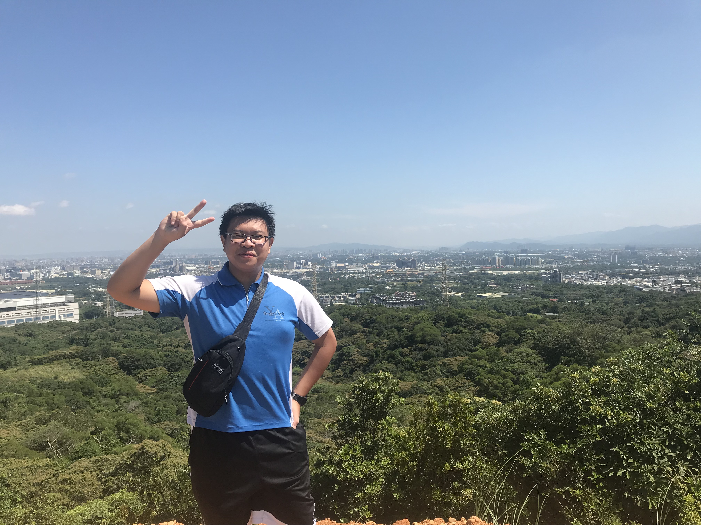

龍星國小在國小，我接觸了大量的社團課，體驗了很多不一樣的活動，其中直排論是我接觸最久，也最有興趣的一項。而同時也透過國小時的一位替代役哥哥，他所開設的C語言程式基礎，首次接觸到了程式設計， 雖然以當時的年紀與程度來說有點太過困難了，但我仍然對於設計程式產生了興趣。 |
||
|  | ||
 |
石門國中國中時，我開始對於跟自然相關的科目產生了興趣，同時在身邊同儕的影響下，我的數學突飛猛進，同時也因為朋友慫恿，我們組隊參加了科展比賽，儘管最後在校內只拿了第二名，但也因此讓我收穫了很多珍貴的經驗。 而在學校的教導下，接觸到了更多的程式相關課程。 |
|
| zirui1 |
治平高中高中，為了考上好的大學，我選擇拋棄較為輕鬆的公立學校，憤然選擇了桃園著名的升學私立高中，治平高中。在學期間，我跟同學們整天都為了得到好成績而努力念書，而學校也有舉辦許多為了培養同學間的合作意識， 與讓學生適時放鬆的活動，我們班在拔河比賽與班級健康操都拿到良好的名次。透過學校的課程，我確定了我以後的方向就是跟程式相關科系。 |
|
 |
個性:隨和、樂觀、矛盾
優點:懂得變通、傾聽、善解人意 缺點:不擅社交、容易分心、擺爛 |
中原
|
 |
中原
|
|